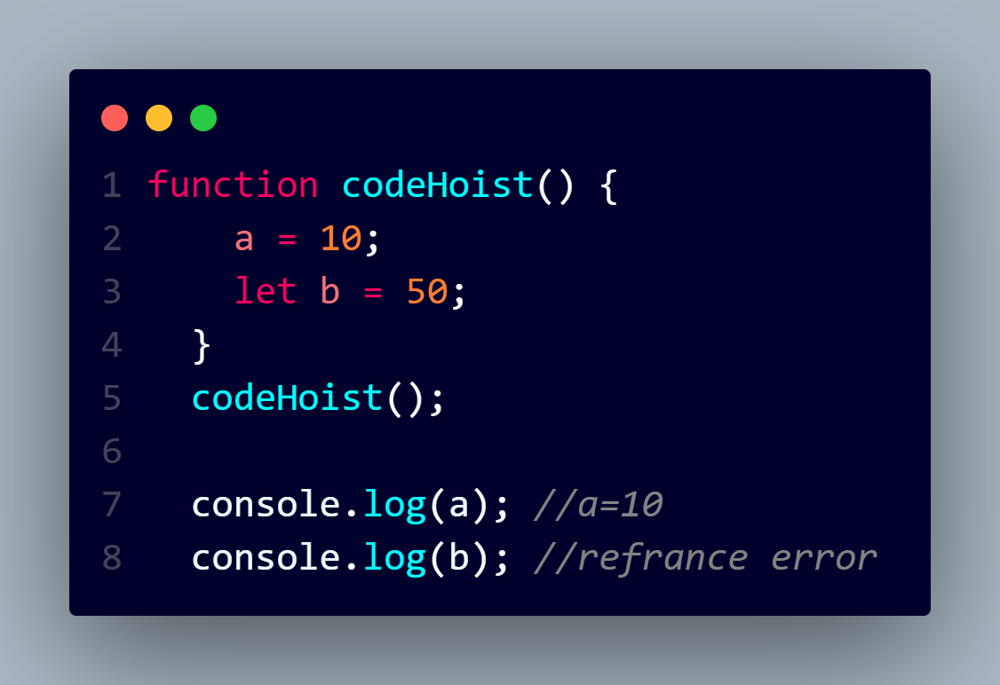

Hoisting is a concept that enables us to extract values of variables and functions even before initializing/assigning value without getting errors and this happens during the 1st phase (memory creation phase) of the Execution Context.
Features of Hoisting:
In JavaScript, Hoisting is the default behavior of moving all the declarations at the top of the scope before code execution. Basically, it gives us an advantage that no matter where functions and variables are declared, they are moved to the top of their scope regardless of whether their scope is global or local.
It allows us to call functions before even writing them in our code.
NOTE : LET AND VAR CANNOT BE HOISTED BECAUSE OF SCOPE
